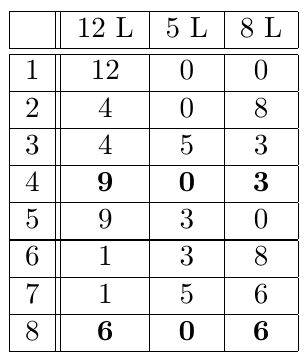

There is a 12 litre barrel filled with water, and two empty barrels (one is 5 litres in volume and the other is 8 litres). Using these barrels, try to
a) divide the water into 2 parts with volumes: 3 litres and 9 litres;
b) divide the water into 2 parts with equal volume.
Try to first solve part a) of the problem.
First we solve a) and from this we get the answer to b). The answer to part a) is found in rows 1 to 4 of the following table. The answer to part b) is found in rows 1 to 8.
